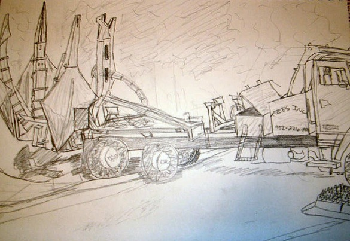
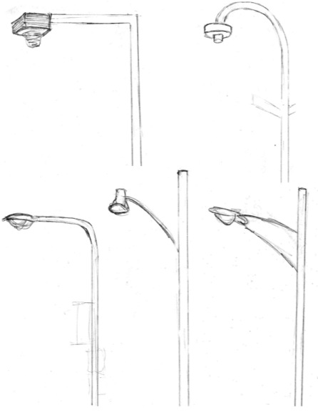
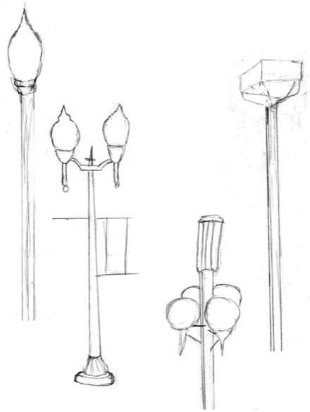

Drawing
I love to draw, whether creating quick sketches for projects I'm working on, or making more finished products like those seen here
First, series of drawings and sketches I made during my time at the University of Cincinnati. Then, a few sketched studies I made of streetlights in Minneapolis and Saint Paul while at Macalester for an urban geography class.
Drawings from UC
The building housing the college Design, Architecture, Art and Planning

A bottle

A specialized truck that uproots trees for replanting
Fastener used instead of staples or paperclips in some European countries

Streetlight studies
Streetlights located on streets designed mostly for auto use in Minneapolis.
Streetlights located on more pedestrian-friendly streets in Minneapolis.
